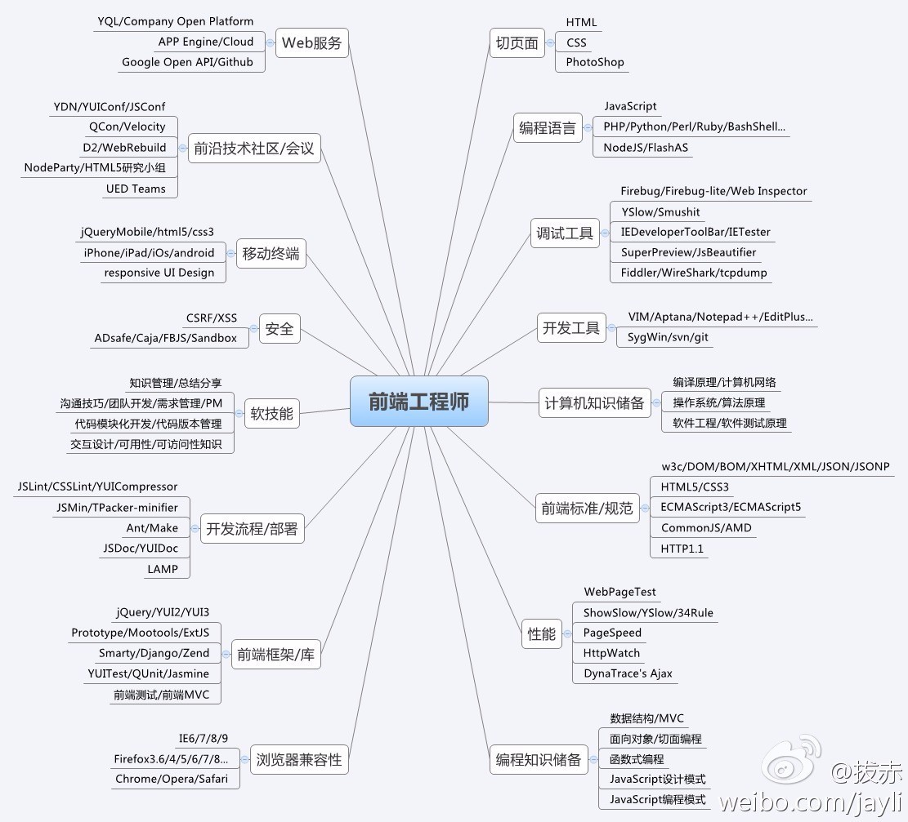

来自：nieweidong (Darren) · GitHub
链接：https://github.com/nieweidong/fetool（点击尾部阅读原文前往）
作者：
微博 @聂微东
个人 Blog fefork.com
博客园 犀利的东哥
已获转载授权
本篇文章记录了一枚程序猿的百宝箱。
主要内容是一些使用过的库、工具、套路或关注的前端组织等等，反正用 前端瑞士军刀 来总结这篇文章再合适不过鸟。
虽混过外企俩家，但劳资英文这项的技能点还是灰色的...so，俺关注的站点主要以中文为主
| 名 称 | 推荐指数 | 备注/说明 |
|---|---|---|
| GitHub | ★★★★★ | 劳资清楚这不是个纯粹的前端社区... 但作为全球最大的搞基社区，无数前端项目在这启航 没 Git 都不好意思面基有木有！ |
| MDN | ★★★★★ | 不解释，无数的资源再等着你探索 |
| Awesomes.cn | ★★★★☆ | 国人维护的前端资源库，深度对接到 Github |
| 慕课 | ★★★★☆ | 大量的在线计算机课程。 虽然初、中级居多，但是不乏有巨作值得细细品尝 |
| W3Cplus | ★★★★☆ | 大漠(《图解 CSS3》作者)在国内的影响力杠杠的 Sass 专家级 |
| 百度 FEX | ★★★★ | 代表作 FIS、UEditor、WebUploader、KityMinder |
| 前端乱炖 | ★★★☆ | 前端社区太多，乱炖还算做的不错的 |
| 极客学院 | ★★★ | 和慕课类似，但是内容更杂、更丰富 PS：貌似比较新颖的教程都是收费的 |
| Div.IO | ★★★ | 主要内容是最新的前端库和前沿技术 |
| 腾讯全端 AlloyTeam | ★★★ | 腾讯 Web 前端团队 |
值得长期占坑的前端个人博客，都是偶经常关注的
| 名称 | 推荐指数 | 备注/说明 |
|---|---|---|
| 如何跟上前端开发的最新前沿 | ★★★★★ | RT |
| 阮一峰 | ★★★★★ | 关注多年，拜读其 ES6 系列... 虽网传靠写书进鸟阿里，但博客内容确实够丰富 |
| 粉丝日志 for 张丹 | ★★★★★ | 大爱作者写的 Node 系列 |
| 张鑫旭 | ★★★★★ | 成名多年的、高产的前端大湿 |
| 名称 | 推荐指数 | 备注/说明 |
|---|---|---|
| hexo | ★★★★★ | 快速、简洁且高效的博客框架 |
| jekyll | ★★★★ | 将纯文本转化为静态网站和博客 |
| Tumblr | ★★★ | 轻博客的祖师爷 |
| Wordpress | ★ | 这玩意古老到我都不想介绍鸟 |
使用 hexo/jekyll + GitPage，前端搭建静态博客那是相当 easy。用 Markdown 写文章做记录，再 push 到 Git 上，分分钟高大上有木有
| 名称 | 推荐指数 | 备注/说明 |
|---|---|---|
| MetroUI | ★★★★☆ | 好看好用，重点是样式特别、个性 |
| LoadersCSS | ★★★★☆ | 用 CSS 技术实现 loading 动画； 补一句，想熟悉、理解 keyframes、animation、transform、transition 的童鞋可以直接去读其源码(只有千把行代码)，读完就算出师鸟:) |
| WeUI | ★★★★☆ | 一套同微信原生视觉体验一致的基础样式库 为微信 Web 开发量身设计，令用户的使用感知更加统一 |
| PostCSS | ★★★★☆ | 最近才知道大名鼎鼎Autoprefixer是其插件 推荐大漠的文章《PostCSS深入学习》，有关 PostCSS 不是什么？PostCSS 是什么？PostCSS 可以做什么等等问题，文章里面有答案 |
| CSSgram | ★★★★ | 图片滤镜库，终于可以用 CSS 在 web 上实现滤镜的效果鸟 IE不支持，不过新的移动设备支持没问题 Can I Use |
| HINT.css | ★★★★ | 一款非常小巧的提示框效果 |
| Balloon.css | ★★★★ | 同上，一款非常小巧的提示框效果 |
| Hover.css | ★★★★ | 很多鼠标 Hover 态的效果，可以给产品学习一下:) |
| Cursor | ★★★★ | 记录各浏览器对Cursor的支持情况 |
| csscss | ★★★★ | 用于检查 CSS 代码冗余 |
| purecss | ★★★☆ | 小巧的响应式 CSS 库，Yahoo!出品 |
| hamburgers | ★★★☆ | 简单的动画库，让 Click(or Tap) 变得美妙 |
| cssmatic | ★★★ | 一个帮忙调试CSS效果的工具 |
| 名称 | 推荐指数 | 备注/说明 |
|---|---|---|
| requirejs | ★★★★★ | JS模块化是构建复杂项目的第一步 中文学习文档奉上：RequireJS 中文网 |
| ECharts | ★★★★★ | 好用，最关键的是支持的图表展示非常之多，强烈推荐 |
| Swiper | ★★★★★ | 强大的 Slider 库 其实这类效果库非常多，但文档能那么专业的就很少鸟 |
| fullPage | ★★★★☆ | 非常好用的全屏滑动库，看 Demo 就明白 |
| PhotoSwipe | ★★★★☆ | 偶常用的 js 库 官网上有这么一句很关键、重要"no dependencies" |
| Vuejs | ★★★★☆ | 比较喜欢其作者... 所以劳资正在看源码学习学习 |
| favico.js | ★★★★☆ | 动态改变浏览器标签栏中的网站图标，非常好玩 |
| ant.design | ★★★★☆ | 淘宝搞的良心项目，文档美好的令人发指 样式优雅，强烈推荐内部系统尝试此库 |
| highlightjs | ★★★★☆ | 代码高亮库，支持非常多的语言 |
| nodePPT | ★★★★ | 前同事三水的大作，好用必须得支持:) 用 Markdown 写 PPT，还可以 HTML 混排，上手飞快 |
| peity.js | ★★★★ | jQuery的图表插件，特别cute，感觉萌萌哒 将HTML转换成一个小的<svg>饼图、圆环图、折线图等等 |
| emojify.js | ★★★★ | 能够将emoji关键词转换为emoji图片的JS插件 可以快速的为你的网站提供emoji表情支持 |
| Highcharts | ★★★★ | Highcharts 中文网，又是一个图表库 确实功能强大，但是觉得不好看... PS：官网就做的不好看，脏脏的赶脚 |
| NProgress | ★★★★ | 使页面加载时有更好的loading效果 |
| Noticejs | ★★★★ | 一个简单的通知库，木有依赖 |
| onepage-scroll | ★★★☆ | 依赖 jQuery 的单页滚动库，和 fullPage 类似 |
| videojs | ★★★☆ | 当下视频需求都用上<video>鸟 样式和交互统一的问题交给 videojs 搞定:) |
| clipboard | ★★★☆ | 仅 2KB 大小，搞定剪贴板功能，屌不屌~ 但是，Safari 不支持... |
| impress.js | ★★☆ | 用来写 PPT 不错，偶也曾为其写过一篇impress.js 初体验 |
| Cropper | ★★☆ | 国人开发的图片裁剪库 |
Swiper/PhotoSwipe/fullPage 有这仨库，微信里常见的 H5 页完全不是问题哒
作为一名大前端甚至是多端，Node 绝逼是必备的一块
社区活跃、部署方便都是令我对 Node 爱不释手的主要原因
| 名称 | 推荐指数 | 备注/说明 |
|---|---|---|
| anywhere | ★★★★★ | 随时随地将你的当前目录变成一个静态文件服务器的根目录 |
| supervisor | ★★★★★ | 监控 Node 代码，自动重启。 A supervisor program for running nodejs programs |
| nodemon | ★★★★★ | 监控 Node 代码，自动重启。 Nodemon is a utility that will monitor for any changes in your source and automatically restart your server. |
| pm2 | ★★★★★ | 是一个带有负载均衡功能的 Node 应用的进程管理器； 是 Forever 的进阶库，想了解的可以看这篇文章《拥抱PM2》 |
| async | ★★★★☆ | 一个流程控制工具包，提供直接而强大的异步功能 |
| lodash | ★★★★☆ | JS 工具库 Underscore.js的一个 fork 发展而来 |
| socket.io | ★★★★☆ | 预计 Node 的实时框架 聊天室、页游等对实时性有高要求的较适用 |
| Mongoose | ★★★★☆ | 让 NodeJS 更容易操作 Mongodb 数据库； 附上一篇Mongoose 学习参考文档 |
| CNPM | ★★★★☆ | 淘宝 NPM 镜像，提供了 NPM 同步的服务 当然可不仅仅这样，利用 CNPM 可以打造企业/个人私有的 NPM 服务 推荐篇搭建私有NPM的文章：《CNPM搭建私有的NPM服务》 |
| koa | ★★★★☆ | 玩 Node 都知道 express，但使用 koa 的就少很多，门槛比 Ex 稍高 通过 generator 避免繁琐的回调函数嵌套，强烈推崇 官方的文章教程 |
| Shipit | ★★★★☆ | 一个强大的自动化部署工具。 shipit 很多地方非常类似 gulp，他们的核心都是任务系统。 |
| node-inspector | ★★★★☆ | Node 调试工具，使用起来跟 Chrome 的 JS 调试器很相似 |
| winston | ★★★★☆ | Node 服务最流行的日志库之一 |
| co | ★★★★☆ | 用 generator 写法让异步代码同步 |
| thenify-all | ★★★★ | 把异步的方法变成 Promise 的 Promisifies all the selected functions in an object |
| PhantomJS | ★★★★ | 一般用来做抓取截图和无界面测试 也可以用来操作 DOM 和网络监测，很好玩的库 Quick Start |
| Mocha | ★★★★ | Node 里最常用的测试框架； 它支持多种 Node 的 Assert libs； 同时支持异步和同步的测试，同时支持多种方式导出结果； 也支持直接在 browser 上跑 JS 代码测试。 |
| everyauth | ★★★★ | OAuth 的集成解决方案 |
| shelljs | ★★★☆ | 写 Node 时难免需要用 shell 去操作些神马 shelljs 是基于 Node 的 shell 工具，API 及其简单 |
| hashids | ★★★☆ | 看名称就懂，给 userid 加解密用的 |
| colors | ★★☆ | 花俏的小工具 让打印console.log时有更好的展示样式 |
| n | ★★ | 控制Node的版本，想升级一行代码搞定 |
supervisor 和 nodemon 这俩都是监控 Node 代码，使得每次修改代码后会，开发 Node 程序必备
以上库俺都有使用过，甚至有不少都是项目开发中、各种特定场景下必用的，有任何使用问题欢迎沟通哈:)
| 名称 | 推荐指数 | 备注/说明 |
|---|---|---|
| Node.js 中文资料导航 | ★★★★★ | Node 的中文资料导航，start1300+ |
| 从零开始 NodeJS 系列文章 | ★★★★★ | 基本上每一篇都看过，强烈推荐 |
| Node.js 包教不包会 | ★★★★★ | 值得阅读，看完绝不用买书鸟 |
| 七天学会 NodeJS | ★★★★★ | 劳资还没看，不过看目录还不错:) |
| Style Guide | ★★★★ | 这是一份关于如何写出一致且美观的 Node.js 代码的风格指南 |
| koa实战 | ★★★★ | “明河出品”这四字已经说明一切。PS：正在连载中 |
Gulp + Webpack 的使用套路参考: learning-gulp
Gulp 资料收集：use-gulp
推荐篇与 Webpack 相关的文章《CSS Modules》
Webpack 用起来吼吼：webpack-howto
| 名称 | 推荐指数 | 备注/说明 |
|---|---|---|
| pm2 | ★★★★★ | 是一个带有负载均衡功能的 Node 应用的进程管理器； 是 Forever 的进阶库，想了解的可以看这篇文章《拥抱PM2》 |
| Webpack | ★★★★★ | 项目构建工具，由于过于复杂和太强大，所以劳资还没去深入研究。 |
| Gulp | ★★★★★ | Gulp 是基于 Node 实现 Web 前端自动化开发的工具。 学习资料附上GulpBook |
| Bower | ★★★★☆ | 前端项目的包管理其实是件复杂的事 谁谁谁依赖谁谁谁，谁谁谁依赖谁谁谁的某个版本...卧槽 Bower 就是搞定这件事儿的，亲爹是 Twitter 推荐篇 Bower 的中文文章：《bower 解决 js 的依赖管理》 |
| Grunt | ★★★★☆ | 和 Gulp 类似，都是项目构建的常见选择 对比这俩的文章可谓不少，推荐篇《Gulp vs Grunt》英盲又想看文档，可以去Grunt 中文网 |
| FIS | ★★★★ | 度厂出品的前端构建工具 文档清晰，功能强大，推荐了解和使用 |
| Gitlab CI | ★★★★ | 一套基于Gitlab的持续集成服务 |
Gulp 最基础的库就不列在下表格中鸟，其中包括：
gulp-concat 作用是连接/合并文件
gulp-cssshrink CSS 文件压缩
gulp-uglify JS 文件压缩
| 名称 | 推荐指数 | 备注/说明 |
|---|---|---|
| gulp-webpack | ★★★★★ | webpack 与 gulp 配合，开启前端 Build 新纪元 webpack plugin for gulp |
| gulp-rev | ★★★★☆ | 高大上第一步，静态文件名称变成 HASH 名称 |
| gulp-rev-collector | ★★★★☆ | 配合gulp-rev使用，自动用 HASH 替换模板内静态文件名 |
| run-sequence | ★★★★ | Gulp 任务机制为并行，RS 使得有依赖的任务可串行执行 使用 gulp-rev 时得用 RS 配合 要不并行的生成配置和处理.html 文件不能同事生效 |
| gulp-util | ★★★★ | 内含一套方法库，功能太多 个人感觉更喜欢功能单一的包，不太喜欢这种大杂烩 |
| gulp-connect | ★★★★ | 有 reload 功能的 Run WebServer 工具 我一般用来 LivereLoad，即保存之后自动刷新页面 |
| gulp-load-plugins | ★★★★ | 可加载 package.json 内与 Gulp 相关的插件 省去鸟一行一行 require 的功夫咯 |
| gulp-clean | ★★★☆ | 移除文件或文件夹的包 |
| gulp-replace | ★★★☆ | 其功能看名字就知道，用做字符串替换的 |
| gulp-autoprefixer | ★★★☆ | 叼炸天的自动处理浏览器前缀的包 文档地址：usage |
| gulp-rename | ★★★ | 把文件重命名 结构设计的好不太会用到这个 |
| gulp-flatten | ★★★ | 删除或替换文件的相对路径； 一般我这用来移动 img 或者其他静态文件到新目录 同上：结构设计的好不太会用到这个 |
| 名称 | 推荐指数 | 备注/说明 |
|---|---|---|
| 2015D2前端论坛 | ★★★★★ | Node方向非常值得看，有干货，相信东哥推荐哈 |
| 前端开发规范手册 | ★★★★☆ | 此手册主要实现的目标：代码一致性和最佳实践 |
| ECMAScript 6入门 | ★★★★☆ | 阮一峰大神所著，一本开源的JS教程 全面介绍 ECMAScript 6新引入的语法特性 |
| ReactNative 中文版 | ★★★★☆ | 翻译自官方的中文文档 |
| ReactWebpackCookBook | ★★★★☆ | 此书会引导读者是进入React和Webpack的世界。 俩都是非常前沿的技术，同时使用会更有趣。 |
| ReactNative 学习指南 | ★★★☆ | 新玩意层出不穷... 对于能持续学习的童鞋，这是个美好的时代 |
| HTML/CSS 编码规范 | ★★★☆ | 编写灵活、稳定、高质量的HTML和CSS代码的规范 |
| 移动前端入门 | ★★★☆ | 入门价值高，移动方向常见问题的较好总结 |
| GulpBook | ★★★☆ | Gulp 是基于 Node 实现 Web 前端自动化开发的工具 |
| 名称 | 推荐指数 | 备注/说明 |
|---|---|---|
| 在 LinkedIn 做面试官的故事 | ★★★★★ | 非面试题，介绍 LinkedIn 的面试过程 文章有很多中肯的建议和想法，推荐阅读 |
| 大漠：写给前端面试者 | ★★★★★ | 这篇文章不涉及任何的面试题 大漠与大家聊聊面试者与被面者之间的感受... |
| 前端面试题 | ★★★★☆ | Git 上非常火的前端面试题，start17k+ |
| 前端面经 | ★★★★ | 主要内容是些前端面试笔试题和面试套路，值得阅读 |
| 名称 | 推荐指数 | 备注/说明 |
|---|---|---|
| Node.js 中文资料导航 | ★★★★★ | Node 的中文资料导航，start1300+ |
| 从零开始 NodeJS 系列文章 | ★★★★★ | 基本上每一篇都看过，强烈推荐 |
| Node.js 包教不包会 | ★★★★★ | 值得阅读，看完绝不用买书鸟 |
| 七天学会 NodeJS | ★★★★★ | 劳资还没看，不过看目录还不错:) |
| stream-handbook | ★★★★☆ | 如果学习 NodeJS，那么流一定是需要掌握的概念 |
| 名称 | 推荐指数 | 备注/说明 |
|---|---|---|
| MongoDB 极简实践入门 | ★★★★☆ | 入门推荐的套路，非常浅显易懂 |
| Mac 设置指南 | ★★★★ | Mac 使用必看 尤其适合 偏执狂/强迫症 患者:) |
| Markdown 资料 | ★★★ | 简单看些语法入门，快速用起来 |
| 名称 | 推荐指数 | 备注/说明 |
|---|---|---|
| CanIuse | ★★★★★ | 前端必备；查看浏览器对各种新特性的兼容情况 |
| overapi | ★★★★★ | 最全的开发人员在线速查手册 |
| 百度脑图 | ★★★★☆ | 非常方便的思维导图工具 |
| ProcessOn | ★★★★☆ | 和百度脑图的功能类似，脑图工具。 |
| VimAwesome | ★★★★☆ | Vim 插件集合，Vim 党必备 |
| Tower | ★★★★☆ | 小而美的多人协同工具。 不光只有 Web 版，还有 iPhone、iPad、Android、微信版。 |
| Slides | ★★★★☆ | 一个所见即所得的 WebPPT 编辑器，非常推荐 |
| faviconer.co | ★★★★ | 一个所见即所得的icon生成器，很好用 |
| smallpdf | ★★★★ | 提供各种格式和 PDF 互相转换 |
| Cmd Markdown | ★★★★ | 好用的 Web 版 Markdown 编辑器 |
| StackEdit | ★★★★ | 又是一款 Web 版 Markdown 编辑器 |
| 墨刀 | ★★★★ | 一个在线移动应用原型制作工具。 旨在帮助产品经理快速制作可在手机端展示的移动应用原型。 |
| htm2pdf | ★★★★ | HTML to PDF |
| Speaker Deck | ★★★★ | 在线的演讲稿展示平台 |
以下列表中的 APP 都是不区分系统平台的
| 名称 | 推荐指数 | 备注/说明 |
|---|---|---|
| 印象笔记 | ★★★★★ | 免费账号完全够用，跨平台跨终端的记录软件 |
| 365日历 | ★★★★ | 首先肯定比系统自带的日历强大，要不推荐个蛋蛋 俺一般用来搞目标管理，比如学习计划和工作计划 生活中会订阅演唱会、电影首映的信息 |
| 多看阅读 | ★★★★ | kindle 确实好，但是懒得随身带着 多看还算不错，书较多且偶尔有特价比较爽 |
| 名称 | 推荐指数 | 备注/说明 |
|---|---|---|
| 小米桌面 | ★★★★☆ | 多好看、多漂亮谈不上，关键是没有广告 |
| 名称 | 推荐指数 | 备注/说明 |
|---|---|---|
| Surge | ★★★★ | 非免费 牛逼的网络开发与调试工具，前端必备 |
| Monkey | ★★★★ | Monkey 是 iPhone 上一个 GitHub 第三方客户端。 展示 GitHub 上的开发者的排名，以及仓库的排名 |
对于美好事务的追求无论何时都不算晚，前年公司给配了台 Mac 用做测试开发机，于是开始在 Mac 下办公。Windows？ 回不去鸟...
| 名称 | 推荐指数 | 备注/说明 |
|---|---|---|
| Homebrew | ★★★★★ | 没它程序猿没法好好干活... Homebrew使OS X更完美。 使用gem来安装gems、用brew来搞定那些依赖包 |
| iTerm2 | ★★★★☆ | Mac 终端功能少又不好看，iTerm2 可以解救你~ 推荐篇文章：《让你的命令行丰富多彩》 |
| BrowseShot | ★★★★☆ | 偶正在使用的网页截图工具，强烈推荐 |
| BeyondCompare | ★★★★☆ | 在Windows下就开始用了 比对文件和文件夹杠杠好使，Merge必备工具 |
| CheatSheet | ★★★★ | 能够显示当前程序的快捷键列表，默认的快捷键是长按 ⌘ |
| Sequel Pro | ★★★★ | 免费好用的Mysql工具 |
| LICEcap | ★★★★ | 屏幕录制工具，支持导出 GIF 动画图片格式 轻量级、使用简单，录制过程中可以改变录屏范围 |
| Manico | ★★★★ | 快捷启动和切换 APP 的工具，高效的第一步 AppStore 上收费，不过可以免费试用 |
| WebStorm | ★★★★ | 功能超强的前端 IDE，不多介绍，谁用谁知道 PS：貌似俺插件装多了，用着卡卡的，风扇呼呼转... |
| Atom | ★★★★ | 2015 年 7 月之前，在桌面环境下我最喜欢的编辑器是 Sublime。 但之后就是 Atom，俺也专门为它写了篇使用纪要 |
| 马克鳗 | ★★★★ | MarkMan，非常强大好用的标注、测量工具。 日常工作免费版就完全可以满足，强烈推荐 |
| Wireshark | ★★★☆ | 说实话，Mac 下木有 Fiddler 挺不习惯，不过在有更强大的替代品 |
| SourceTree | ★★★☆ | 一款好用的的 Git 客户端工具，重点是支持中文:) |
| focus booster | ★★★ | 因为比较在意时间管理，所以这软件是俺工作时间的必备之物 |
| Mou | ★★ | 小清新的 Markdown 编辑器 |
| 名称 | 推荐指数 | 备注/说明 |
|---|---|---|
| oh-my-zsh | ★★★★★ | 终端党 必用的好工具，强烈推荐 |
| tree | ★★★★ | linux 以树状图逐级列出目录的内容 |
| oneapm | ★★★★ | 强大的运维工具，提供多种监控客户端； 有采集、分析、展示等一套功能； PS：我这用了服务器监控(免费哦) |
| httpie | ★★★☆ | 一个 CLI 中的 HTTP 客户端 用法简单、易读 |
| 名称 | 推荐指数 | 备注/说明 |
|---|---|---|
| JSONView | ★★★★★ | 麻麻再也不用担心偶调试接口啦 |
| wappalyzer | ★★★★☆ | 分析网站使用的技术 它可以检测网页的 Web 服务器、JS 框架等等 |
| Postman | ★★★★ | 强大的调试工具，推荐之 |
| gitShare | ★★★★ | 用于方便把Github项目分享到 Twitter 或 Facebook |
| 二维码生成器 | ★★★★ | RT |
| User-Agent Switcher | ★★★★ | 模拟各种终端的 UA，达到调试目的 |
| GitPlug | ★★★☆ | 在 Git 项目页中嵌入有关的图表信息 |
| Swap My Cookie | ★★★☆ | 切换马甲非常方便 |
| Infinity | ★★☆ | 针对 Chrome 的插件，新标签页 会让你耳目一新 |
| 名称 | 推荐指数 | 备注/说明 |
|---|---|---|
| Git 教程-廖雪峰 | ★★★★☆ | 俺有看过不少 Git 的文章，确实这个系列是最通俗易懂的 |
| GitAwards | ★★★★ | Git 工具，可以查看 Git 排名 |
| Git 速查 | ★★★★ | 分类清晰的速查表 |
| Git 简明指南 | ★★★☆ | 入门Git的简明指南，木有高深内容:) |
| Git 学习资料整理 | ★★★ | 内容包括很多 Git 的相关资料，star 1200+ |
| GitHub 漫游指南 | ★★☆ | 一篇还算不错的 Git 学习总结，就是乱了点... 我理解作者漫游的意思是漫无目的想到哪写到哪~ 看到作者为鸟达成 Git 连击的成就，也是蛮拼的:) |
| 名称 | 推荐指数 | 备注/说明 |
|---|---|---|
| Mongoose | ★★★★☆ | 让 NodeJS 更容易操作 Mongodb 数据库。 附上一篇Mongoose 学习参考文档 |
放些开发中较有用的杂物在这儿
| 名称 | 推荐指数 | 备注/说明 |
|---|---|---|
| 租房要点 | ★★★★☆ | 适用于北上广深杭，大城市打拼租房确实是硬伤 |
| QQ 群规 | ★★★★☆ | 突然某天，有个 QQ 群让我加群 原本我是拒绝的，但当我看完这篇 QQ 群规后... 劳资真的被感动到了，太牛逼、够专业！ 最后，我默默加群鸟:) |
| .gitignore 文件 | ★★★★☆ | 介绍不同语言项目的 gitignore 模板 |
| 程序员如何优雅的挣零花钱？ | ★★★★ | 中肯的文章，如果读完能有些许收获，那么恭喜你 |
| git-draw | ★★★ | 黑魔法，可以修改自己 Git 上的 Contributions |
| GitBook | ★★★ | 写记录的好地方 |
| Codebabes | ★★★ | 学编程的网站。 重点是每通过一个测试，尼玛对应的妞会脱一件衣服... PS：要翻墙哦~ |
| emailframe | ★★ | 邮件展示确实比较坑，建议有需要的收藏 |
| ReadmeSample | ☆ | 项目高大上的第一步就是包装，所以来看看 README 的书写套路吧 PS：劳资怎么这么无聊... |
| 名称 | 推荐指数 | 备注/说明 |
|---|---|---|
| windows93 | ★★★★☆ | 模拟 Win93 桌面，思路、体验和整体效果比较有意思 |
| GeekTyper | ★★★★☆ | 好玩又具有 Geek 精神的网站，虽然创建的目的是个恶作剧 PS：网站需要翻墙 |
| 2016.makemepulse.com | ★★★★☆ | 帅哭了。请使用现代浏览器打开 |
| 前端技能栈 | ★★★★ | 好玩的前端技能栈展示 |
| Mapbox | ★★★★ | 非常叼的开源项目，有方便的 JSAPI(还有 SDK)。 不过免费版只能浅尝，流量有限。 PS：网站需要翻墙 |
| Clark Duvall | ★★★★ | 一枚歪果仁的个人 blog，范儿叼叼的 |
| SuperScrollorama | ★★★☆ | 好玩好看的动画库，链接是 SuperScrollorama 的展示页 |
| parallax.js | ★★★ | 一个视差引擎的官网，在电脑和手机上都有很好的体验 |
| CSS字母 | ★★ | 用 CSS 实现英文字母，叼叼的 |
| 墨刀 | ★★ | 一个在线移动应用原型制作工具。 旨在帮助产品经理快速制作可在手机端展示的移动应用原型。 |
作为负责最终效果呈现的前端工程师，多少得了解些 设计和交互 的，这也是为什么 fetool 会单独的存在这一章...当然话又说回来了，偶毕业的第一份工作是设计:)
| 名称 | 推荐指数 | 备注/说明 |
|---|---|---|
| 站酷 | ★★★★☆ | 里面好东西太多，俺当年真没少再上面淘素材 |
| UI中国 | ★★★★ | 光听名字就知道有多高大上鸟:) |
RT，这篇都是些文档或者API，一般这类东西都在大家浏览器的书签内，偶这也列一下大前端常用的手册地址
| 名称 | 推荐指数 | 备注/说明 |
|---|---|---|
| 百度CDN公共库 | ★★★★☆ | 基本常见的库都收录拉，搞 demo 的时候特方便 |
| HTML 和 CSS 代码规范 | ★★★★☆ | 编写灵活、稳定、高质量的 HTML 和 CSS 代码的规范 |
| Linux命令中文手册 | ★★★★ | 木有系统的好好学习 Linux，所以命令更不熟悉 真羡慕那些CLI玩的飞起的:) |
| Git 速查 | ★★★★ | 分类清晰的速查表 |
| jQueryAPI 1.11.3 | ★★★★ | ZeptoAPI 基本和 jQuery 一样，所以看一份就好 |
| CSS3 | ★★★★ | CSS3 的在线手册 |
| Express API | ★★★☆ | 中文手册:) 4.x和3.x都有 |
| CI用户指南 | ★★ | 一个轻量级的 PHP 框架用户指南 推荐指数低的原因是劳资PHP比较弱，囧 |
| Yaf | ★★ | 鸟哥(惠新宸)所写的 PHP 框架 推荐指数低的原因同上... |
俺算个比较能自我总结的码农，所以偶尔喜欢写点东西做些记录或者自我熏陶陶醉一下。 可写着写着发现Evernote里面的东西太尼玛多(乱)了，于是想着把一些技术相关的资料都整理整理，都丢到Git上沉淀下来。 这样Evernote就可以只需要记录些偏生活方便的，看着清爽一些...
所以，这篇记录其实只是为偶自己而写，确信以后也一直会这样~~~
说说目标
其实与这篇记录类似的文章太多鸟，俺也不愿意成为一个单纯的收集资料，分享资料的这么个东西。 我希望 fetool 能更生动、更个性，最好能更另类点，对于每样工具的思考和解析更多点，吐槽也必须有理有据，然后再配上劳资收集的 low 图，完美！希望通过不停的完善这篇记录，能Push劳资多了解业内的新玩具和新创意，然后围绕这些新东西，客观的再写点好东西，比如文章、资料、开源项目这些，让其他伙伴们少走弯路或学的更顺畅点儿
所以劳资对自己的要求是：这篇记录里列出的每样东西，自己都得的去了解、去尝试，然后再列出来。 能举一反三最好，如果达不到至少也能清楚的认识：列出来的这玩意对程序员有没有卵用，解决了啥痛点。
1、继续完善和扩充内容
2、“备注/说明”这一栏不够犀利，希望再多加入自己的理解、点评、吐槽，让这篇记录更犀利和生动
3、支持导出多种格式，如.pdf、.epub、.mobi等
4、后续看看如果有必要，可以单独搞个页面，优化下阅读和展示效果
以下是 @拔赤 总结的前端技能图：

备注：本文所有链接均点击尾部“阅读原文”前往查阅！
●本文编号1524，以后想阅读这篇文章直接输入1524即可。
●本文分类“前端”搜索分类名可以获得相关文章。
●输入m可以获取到文章目录
前端开发↓↓↓

Web开发↓↓↓
更多推荐请看《15个技术类公众微信》
涵盖：程序人生、算法与数据结构、黑客技术与网络安全、大数据技术、前端开发、Java、Python、Web开发、安卓开发、iOS开发、C/C++、.NET、Linux、数据库、运维等。传播计算机学习经验、推荐计算机优秀资源：点击前往《值得关注的15个技术类微信公众号》！
![]()